Exemplo da proteína
Sangue com 6 g/dL e pleura com 4 g/dL: relação de 0,67, maior que 0,5. Exsudato.
Do líquido que se acumula ao ar que entra na pleura: como reconhecer no exame e na imagem, separar transudato de exsudato e decidir quando drenar.
Organizada a partir da transcrição da aula e dos slides do professor, com os erros da transcrição automática corrigidos e a linguagem ajustada. A legenda de cores está na página 2.
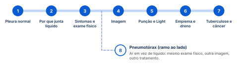
Cada pulmão é embrulhado por duas películas finas: uma colada nele e outra forrando a parede do tórax. Entre elas só há um fio de líquido, que deixa o pulmão deslizar quando a gente respira. Se entra líquido a mais ou ar nesse espaço, o pulmão perde lugar para encher: é a doença da pleura.
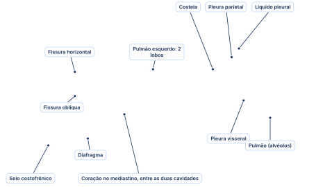
Ilustração feita para esta apostila. As duas pleuras são formadas por células mesoteliais. O seio costofrênico, no canto de baixo, é onde o derrame aparece primeiro na radiografia (capítulo 04); a fissura horizontal é onde se forma o "tumor fantasma".
“O pneumologista faz todos os procedimentos que vão estar aqui, exceto cirurgias abertas. Mas drenagem de tórax, punção de alívio, tudo isso pode ser feito também pelo clínico, pelo emergencista, pelo intensivista.”
A pleura é uma camada de células mesoteliais. A pleura visceral reveste o pulmão; a pleura parietal reveste a parede do tórax. Entre as duas fica o espaço pleural, "um espaço que não deveria existir": um espaço virtual, porque as duas pleuras ficam praticamente juntas.
Elas só não estão grudadas porque há um pouco de líquido entre elas. Esse líquido funciona como um lubrificante: deixa uma pleura deslizar sobre a outra, e assim o pulmão consegue encher e esvaziar dentro da cavidade torácica. Os dois lados, direito e esquerdo, são espaços independentes.
A quantidade que fica entre as pleuras, segundo a aula.
Nos livros: costuma-se citar um volume menor, por volta de 0,1 a 0,3 mL por quilo de peso em cada lado.
Quando aparece alguma coisa dentro desse espaço, está caracterizada uma doença da pleura: ar é pneumotórax; líquido é derrame pleural. Nos dois casos, a mecânica de inspirar e expirar se altera.
O líquido da pleura entra e sai o tempo todo. Ele junta quando entra mais do que sai: pressão alta dentro dos vasos, pouca proteína no sangue, linfa entupida ou pleura inflamada. Descobrir qual desses mecanismos aconteceu já aponta a causa.
O líquido sai do capilar para a pleura empurrado pela pressão hidrostática e volta puxado pela pressão oncótica, a força das proteínas do plasma. A reabsorção acontece pela circulação venosa, e o excedente vai pelos vasos linfáticos: "a pressão é de 35 e a resultante de reabsorção é de 29; esses 5, 6 centímetros de água que sobram" saem pela linfa.
Diante de um derrame, a pergunta é: está aumentando a formação do líquido, diminuindo a reabsorção, ou os dois mecanismos ao mesmo tempo? A resposta já ajuda no diagnóstico diferencial, porque cada mecanismo aponta para um grupo diferente de causas.
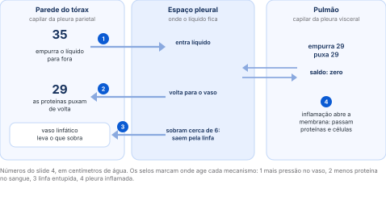
Hipertensão descompensada, pressão venosa central alta. Pense em causas do coração, do rim e do fígado: aumentam o volume que circula e empurram mais líquido para fora.
Paciente desnutrido, com albumina baixa, grande queimado, com sepse, câncer ou doença inflamatória grave. Perde a força que puxa o líquido de volta.
A linfa ainda dá conta de até 100 a 150 mL a mais por dia. Um tumor da parede do tórax, da mama ou da axila que obstrua os linfáticos tira essa margem.
"Esse aqui é muito importante." O pulmão inflamado inflama a pleura visceral, que deixa passar proteínas e células (neutrófilos, linfócitos): o derrame fica mais inflamatório, exsudativo.
Terceiro espaço são todas as cavidades fora do leito vascular: pleura, peritônio (a ascite), pericárdio e tecido subcutâneo (o edema). Num problema sistêmico, como o paciente com anasarca, a pressão hidrostática alta e a pressão oncótica baixa fazem o líquido ir para todos esses lugares ao mesmo tempo: edema nas pernas, ascite, derrame pericárdico e derrame pleural juntos.
Os mecanismos de pressão dão um derrame sem inflamação; a pleura inflamada dá um derrame inflamatório. É essa diferença que a punção vai medir (capítulo 05).
Quanto mais rápido o líquido junta, mais falta de ar e dor o paciente sente; se junta devagar, pode não sentir nada. No exame, derrame e pneumotórax são quase iguais: o que separa é o som ao bater no tórax, maciço no líquido e oco no ar. E o exame sozinho não basta para furar o tórax de quem está estável.
Um derrame que se forma devagar, ao longo de semanas, dá tempo ao paciente de se adaptar: ele pode não ter dor nem falta de ar. Quando o espaço pleural se enche rápido, aparecem dispneia e dor torácica. O líquido empurra o pulmão, que perde capacidade de expandir: é um distúrbio restritivo.
Inspeção comparativa, palpação, percussão e ausculta. Derrame e pneumotórax afastam o pulmão da parede, por isso quase tudo é igual. A diferença está na percussão: som maciço no líquido, timpânico no ar.
O espessamento pleural (paquipleuris) é a pleura inflamada há muito tempo, quase sempre depois de um derrame exsudativo que evoluiu para fibrose. Ela não abaula: retrai, e pode até deformar a parede do tórax. O pneumotórax só chega a isso se houver também líquido inflamatório (hidropneumotórax).
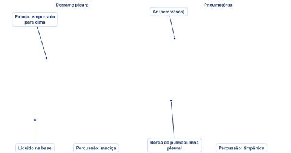
Ilustração feita para esta apostila. Líquido pesa e vai para baixo: som maciço. Ar sobe e afasta o pulmão da parede: som timpânico.
Furar o tórax só pelo exame físico. Em urgência e emergência se fala muito em puncionar logo o pneumotórax hipertensivo. Vale para o paciente instável, sem acesso a imagem (atendimento pré-hospitalar, parada iminente). Se o paciente está estável, faça primeiro o exame de imagem: "sempre optem por primeiro tentar fazer o exame de imagem para evitar iatrogenia desnecessária".
A radiografia em pé é o primeiro exame: o líquido desce para o fundo e apaga o cantinho entre o diafragma e as costelas. Deitar o paciente de lado mostra se o líquido corre (livre, melhor) ou fica preso (loculado, pior). Ultrassom e tomografia tiram as dúvidas e mostram as lojas de pus.
Os sintomas levantam a suspeita, o exame físico reforça, e a imagem dá o diagnóstico definitivo. As células mesoteliais são muito reativas: a imagem depende da intensidade e do tempo da agressão, e quanto mais crônico e inflamado o derrame, mais fibrose ele forma.
A primeira alteração é a perda do seio costofrênico: some a ponta aguda que a base do pulmão faz no canto entre o diafragma e as costelas. O líquido forma uma curva, a parábola de Damoiseau; nos derrames maiores, essa borda curva é o sinal do menisco. No perfil a alteração aparece ainda melhor.
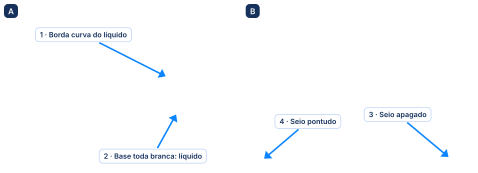
Imagens dos slides da aula: (A) derrame volumoso, slide 11; (B) pequeno derrame, slide 12.
Derrame pequeno escondido no posteroanterior. Ficou na dúvida se há derrame? Olhe o perfil: o acúmulo de líquido e a perda do seio costofrênico aparecem bem melhor.
“É até mais fácil ver no perfil do que no [posteroanterior], tá? Isso é importante também que vocês saibam.”
Para saber se o derrame é livre ou se já tem traves de fibrina, deite o paciente sobre o lado do derrame e repita a radiografia com raios horizontais. Se o líquido escorre e forma uma coluna ao longo de todo o tórax, ele é livre. A confirmação de quão inflamado ele é vem da punção (capítulo 05), mas o líquido que corre é bom sinal.
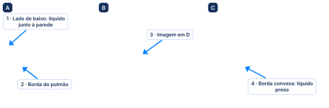
Imagens dos slides da aula: (A) decúbito lateral direito, slide 13; (B) imagem em D de um empiema crônico e (C) exsudato crônico em organização, slide 14.
O líquido se acumula embaixo do pulmão, entre ele e o diafragma, e empurra o pulmão para cima; o diafragma fica no lugar. É difícil de ver no posteroanterior, porque o seio costofrênico continua aparecendo e o contorno parece normal. A pista é a altura dos diafragmas: uma diferença maior que a habitual. No perfil, a coluna de líquido aparece bem.
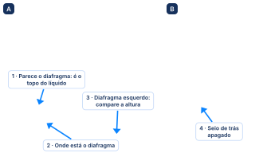
Imagens do slide 15 da aula: (A) derrame infrapulmonar direito; (B) perfil direito.
"Ah, então ele não tem derrame pleural." No infrapulmonar o seio costofrênico aparece e engana. Olhe a altura dos diafragmas e peça o perfil.
Uma opacidade no meio do pulmão direito que assusta paciente e médico: "Meu Deus, isso aqui é um tumor". É líquido preso na fissura horizontal, a que separa o lobo superior do lobo médio e vai da axila até o meio do peito. Por isso ele só acontece no pulmão direito. Também é chamado de pseudotumor. Na dúvida entre pulmão e líquido, a tomografia confirma; o ultrassom aqui é mais difícil.
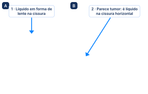
Imagens do slide 16 da aula: (A) e (B) líquido na cissura horizontal simulando tumor.
Os dois mostram o tórax em três dimensões e encontram as traves inflamatórias dentro do líquido, o que ajuda muito quando se pensa em empiema.
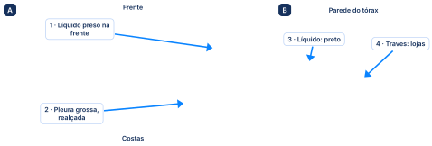
Imagens do slide 17 da aula: (A) tomografia com lojas de empiema; (B) várias lojas no ultrassom.
"Vocês vão perceber ao longo da formação que vai ser falado sempre muito em ultrassom." Para quem for trabalhar em emergência ou terapia intensiva, ele sugere fazer, depois de formado, cursos de ultrassom à beira do leito.
Para saber se o líquido é "água parada" ou "líquido de inflamação", tira-se um pouco com uma agulha e compara-se com o sangue. Se tem muita proteína ou muita enzima de inflamação, é exsudato, e a pleura precisa de atenção. Se não tem, é transudato: trata-se o coração, o fígado ou o rim, e a pleura se resolve sozinha.
A imagem mostra que há líquido; para saber se ele é mais ou menos inflamado é preciso analisá-lo no laboratório. Para isso se faz a toracocentese: a punção do espaço pleural. "A técnica não tem muito segredo."
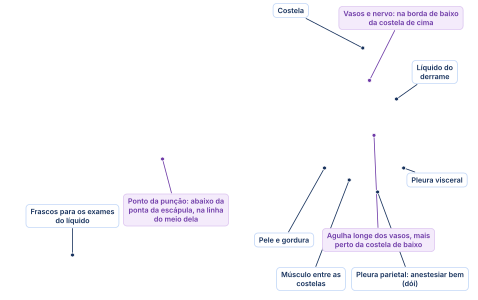
Ilustração feita para esta apostila. Em roxo, detalhes de técnica que não foram ditos em aula: a posição da punção e o caminho da agulha entre as costelas.
Richard Light definiu os critérios em 1972, quando ainda era residente de primeiro ou segundo ano de cirurgia torácica. Na época "drenavam todo mundo", e ele via complicações de dreno em pacientes que não precisavam: começou por conta própria a dosar substâncias no líquido. "Se era um líquido não inflamatório, por que não esperar? Por que não tentar tratar a causa base?" Esteve em Cascavel umas duas vezes nas décadas de 80 e 90, era muito querido e morreu há uns três, quatro anos; o New England Journal of Medicine publicou editoriais sobre ele.
No slide 20 (revista Chest): o artigo é de quando ele era "medical resident", residente de clínica médica.
Cada critério compara o líquido pleural com o sangue: quanto mais proteína e desidrogenase lática passaram para a pleura, mais a membrana está permeável, ou seja, inflamada (pneumonia, tuberculose, câncer).
Exsudato: pelo menos um critério positivo. Transudato: todos negativos.
Sangue com 6 g/dL e pleura com 4 g/dL: relação de 0,67, maior que 0,5. Exsudato.
Laboratório com limite de 300 e pleura com 250: 2/3 de 300 é 200. Exsudato.
No slide 19 (resumo do artigo de 1972): o terceiro critério aparece como desidrogenase lática pleural acima de 200 unidades internacionais.
Um quarto critério, que não é de Light: veio depois, porque no paciente com insuficiência cardíaca usando diurético os critérios de Light acertam menos. Aqui não é uma divisão, é uma subtração: albumina do sangue menos albumina da pleura.
Albumina do sangue menos a da pleura. Diferença grande: a albumina não está passando, é transudato. Menor: exsudato.
No slide 22: "albumina sérica – albumina pleural > 1,2 mg/dL (transudato)".
Nos livros: a albumina é medida em g/dL, e o gradiente aparece como 1,2 g/dL.
A tabela da revisão de 2018 (slide 24) lista dezenas de causas. "Tem que saber tudo? Claro que não." O generalista precisa saber as três principais de cada tipo; se não for nenhuma delas, encaminha ao especialista.
Ele lembrou ainda que a hipertensão mal controlada, por exemplo numa síndrome nefrítica, também pode dar transudato.
“Caramba, eu não vou ficar drenando o tórax dos pacientes que têm uma insuficiência cardíaca descompensada. É muito melhor tratar a insuficiência cardíaca.”
A pneumonia pode deixar líquido inflamado na pleura. Se ele engrossa e vira pus (empiema), antibiótico não resolve: é preciso dreno no tórax e, se o dreno não der conta, cirurgia para limpar. O exame do líquido (aspecto, bactéria e pH) diz quem precisa de dreno.
O derrame da pneumonia (parapneumônico) é inflamatório, e "se esse líquido é inflamatório, ele vai evoluir". O paciente costuma chegar na primeira fase, com os sintomas da pneumonia: tosse, dor torácica, expectoração, febre.
Se o derrame não é tratado, as traves de fibrina formam lojas e junta pus: é um abscesso dentro do tórax. E abscesso se trata com cirurgia; no pulmão não dá para tratar empiema só com antibiótico. A fase final é a pleura espessada residual, a paquipleuris. "Eu não quero deixar chegar nessa fase final."
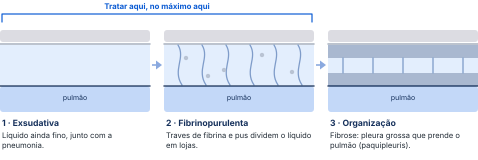
Na punção, pus é sempre empiema, e pH abaixo de 7 também é sempre empiema: nem é preciso esperar o resto da análise. Para a prova, ele usa o fluxograma da aula: pH abaixo de 7,2 já é empiema e o tórax precisa ser drenado. O pH normal do líquido fica entre 7,2 e 7,4.
Com pH de 7,1 ou 7,2, na prática ainda se poderia tentar esvaziar com a punção e ver se o líquido volta.
Nos slides: slide 26, "se pH < 7,0: empiema!"; fluxograma do slide 27, "pH ≤ 7,2" para drenar; tabela do slide 28, "pH < 7,2".
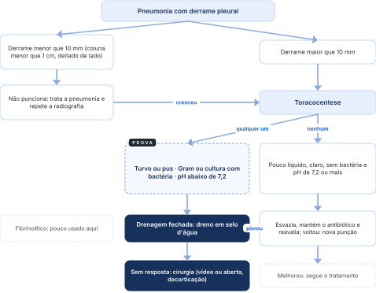
Fluxograma do slide 27, redesenhado. A pneumonia é tratada em todos os ramos.
“Aqui nesse fluxograma, e vai ser a partir daqui que a gente vai na prova: se o líquido tiver um pH abaixo de 7,2, a gente já vai dizer que é um empiema; se ele for líquido turvo ou pus claramente, eu vou dizer que é um empiema pleural, tem que drenar o tórax desse paciente.”
"Gram positivo" no fluxograma não é bactéria Gram-positiva. Quer dizer que o exame de Gram foi positivo: a bactéria apareceu no microscópio, seja ela Gram-negativa (Pseudomonas, Klebsiella) ou Gram-positiva (pneumococo). A cultura conta do mesmo jeito, mas demora dois a três dias: se vier positiva depois e ainda houver líquido, drene.
No meio da pandemia, uma moça de 22 anos, sem doença nenhuma, teve uma pneumonia comunitária extensa. Pelo escore de gravidade da pneumonia ela poderia ir para casa com amoxicilina, mas ele internou: "é uma pneumonia muito extensa". No segundo ou terceiro dia apareceu o derrame; a punção tinha todos os critérios, e o cirurgião torácico drenou. Um dia depois ela ficou séptica e foi direto para a toracoscopia. "Eu tenho certeza absoluta que, se ela não tivesse ido para a cirurgia, ela tinha morrido."
Os critérios às vezes só aparecem depois de várias punções. Quando aparecerem, acione o cirurgião mesmo que você mesmo passe o dreno: se o paciente piorar, você vai precisar dele. Numa cidade sem cirurgião torácico, ou sem cirurgião geral que faça a toracoscopia, peça a transferência e insista com a regulação.
“Quero, porque tem critérios de evolução para um quadro mais grave que tem acometimento cirúrgico. Não adianta, antibiótico não vai resolver abscesso. Sejam enfáticos, porque senão os pacientes vão mal mesmo.”
O dreno resolve quando o caso ainda é precoce. Se já há muitas traves, os detritos inflamatórios entopem o dreno: é preciso trocar o dreno ou ir para a cirurgia.
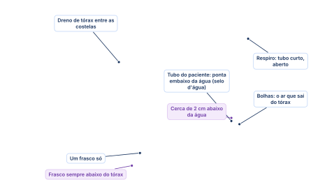
Ilustração feita para esta apostila. Na aula: um selo d'água, um frasco. Em roxo, detalhes de montagem que não foram ditos.
Na categoria 3 basta um dos itens. Tabela do Colégio Americano de Médicos do Tórax (2000), no slide 28.
Na tuberculose, achar o bacilo no líquido fecha o diagnóstico; se não achar, um líquido inflamado cheio de linfócitos com adenosina deaminase acima de 40 também fecha. No câncer, o objetivo é aliviar a falta de ar: tira-se o líquido e, se o paciente ainda tem um bom tempo de vida, "cola-se" a pleura com talco para o líquido não voltar.
É relativamente simples. O paciente com tuberculose pulmonar que mostra derrame na radiografia de controle tem grande chance de derrame tuberculoso; às vezes, porém, a doença começa pelo derrame. Punciona-se o líquido e pede-se a pesquisa do bacilo (baciloscopia) e a cultura: se uma delas vier positiva, o diagnóstico está fechado. E se a baciloscopia vier negativa? Ainda dá para fechar pela bioquímica do líquido. "Percebam que esse é bem mais rápido": comparada ao derrame da pneumonia, a tuberculose "não tem muito segredo". O que pesa na prova é a combinação abaixo.
“Não venham me chorar na prova se eu colocar lá: o paciente tem um derrame pleural exsudativo com [adenosina deaminase] de 40, qual o diagnóstico? Tuberculose pleural. Não necessariamente! Eu não falei que era linfocítico; pode ser neutrofílico.”
Exsudato linfocítico com adenosina deaminase acima de 40 U/L é tuberculose pleural.
Pelo menos um critério de Light positivo.
Predomínio de linfócitos na contagem de células.
Acima de 40 U/L no líquido pleural.
Adenosina deaminase alta sozinha não fecha tuberculose. Se o exsudato for neutrofílico, pode ser outra causa. O slide traz só a dosagem da adenosina deaminase pleural acima de 40 U/L; o "linfocítico" ele acrescentou falando.
Quase sempre o câncer de base já é conhecido. Pode o derrame ser a primeira manifestação? Pode, mas é raro: a essa altura haverá outros sinais, como a massa no pulmão, nódulos na mama ou sintomas intestinais. Os que mais dão metástase na pleura, "disparado", são pulmão e mama; o cólon também pode. Câncer na pleura já é doença metastática: o tratamento é paliativo, para aliviar a falta de ar.
O exemplo da aula: uma senhora de 70 anos com câncer de mama em tratamento chega com muita falta de ar. Puncione e pergunte se melhorou. Não melhorou? Procure outra causa. Melhorou? Confirme na imagem que o pulmão reexpandiu. Sem fazer mais nada, em uma a três semanas o líquido volta e a falta de ar também.
A pleurodese é jogar uma substância inflamatória dentro da pleura para que as duas pleuras grudem uma na outra. Grudadas, não sobra espaço e não se forma mais líquido. É a abordagem mais usada quando o pulmão reexpande.
"Então por que não faz isso em todo mundo?" Porque geralmente é feita por videotoracoscopia e causa uma inflamação muito intensa: o pós-operatório tem dor, febre e internação, num paciente que já tem câncer avançado. A escolha depende do tempo de vida esperado.
No slide 30: a pergunta do fluxograma é "sobrevida maior que 1 semana?". Na aula: "Eu não diria assim uma semana".
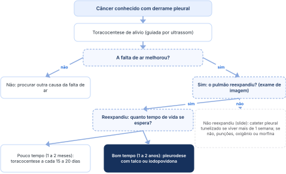
O caminho todo: fluxograma do slide 30 (revisão do New England Journal of Medicine, 2018), traduzido, com os tempos de vida que o professor usou.
Pneumotórax é ar dentro da pleura: o pulmão murcha porque perde a pressão negativa que o mantinha cheio. Pode surgir do nada (bolhas que estouram em rapazes magros), por trauma ou por um procedimento. Pequeno e estável pode só ser observado; grande, ou com o paciente mal, leva dreno.
O ar entra na pleura por fora, quando algo perfura o tórax, ou por dentro: um pulmão doente, com bolhas embaixo da pleura que estouram, ou uma fístula broncopleural.
Dentro do tórax a pressão é negativa. Na inspiração o diafragma desce, a pressão fica ainda mais negativa e o ar de fora, com pressão maior, entra sozinho. Na expiração o ar sai pela retração elástica do pulmão (ou pela força dos músculos, no esforço). Com ar na pleura, a pressão dentro fica igual à de fora: "pode fazer a força que quiser, o ar não vai entrar". O pulmão colapsa, vem a insuficiência respiratória e, no extremo, a parada cardiorrespiratória.
Não estava acontecendo nada de errado e, de repente, o pneumotórax. Divide-se em primário e secundário (abaixo).
Tiro, facada, acidente de trânsito; trauma contuso ou penetrante. Quase sempre vem com sangue (hemopneumotórax), que vai precisar de dreno.
Acesso venoso central, toracocentese, acupuntura, ventilação mecânica com pressões altas (barotrauma), rolha no circuito do ventilador. Mais comum em quem já tem doença pulmonar, sobretudo enfisema. "O iatrogênico é do estudante de medicina, né?"
Neonatal, depois da tuberculose, fibrose cística, catamenial, pneumocistose. Ele não entrou em detalhes.
No slide 33: secundário "geralmente em pacientes com existência de patologias pulmonares ou mediastínicas".
"Então o secundário não tem relação com o tabagismo?" Tem, quando a doença de base vem do cigarro, como o enfisema da doença pulmonar obstrutiva crônica, cujas bolhas podem romper. Mas o cigarro é fator de risco para a doença pulmonar, não necessariamente para o pneumotórax.
Ilustração feita para esta apostila. À direita, o tratamento das bolhas: o cirurgião "bota um grampeador ali e tira aquela parte do pulmão".
Como no derrame, tudo depende do tempo de instalação e da reserva do paciente. Um atleta de 20 anos e 1,98 m pode passar uma ou duas semanas com falta de ar progressiva, achando que foi "um mau jeito na musculação". Não é o comum: em geral os sintomas começam logo.
Se o paciente está estável, ele vai para o exame de imagem, "em 99% das vezes". Como no derrame, começa-se pela radiografia simples.
Nos livros: a linha que aparece na radiografia é a pleura visceral, na borda do pulmão; o slide 35 e a aula falam em "identificação da pleura parietal".
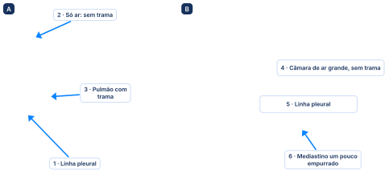
Imagens dos slides 36 e 37 da aula. No slide 37, os rótulos em inglês foram cobertos pelos nossos.
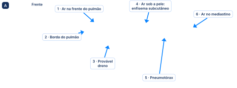
Imagens dos slides 38 e 39 da aula.
“Eu vou falar depois para vocês, não está no slide, quais são os sinais ultrassonográficos do pneumotórax. Anotem, vai ser tipo exsudato linfocítico com [adenosina deaminase] alto: não vai estar no slide, mas vocês anotem.”
Serve quando a radiografia não deixou claro, ou quando você já está com o ultrassom na mão (por exemplo, depois de puncionar um acesso venoso central guiado por ele). Lembre que as duas pleuras ficam encostadas, deslizando uma sobre a outra: o ultrassom enxerga esse deslizamento pleural.
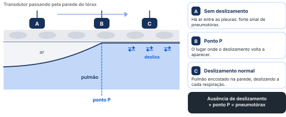
Existe ainda o sinal da areia da praia, no modo M, que ele só citou. Para ver: "YouTube pneumotórax ausência de deslizamento pleural".
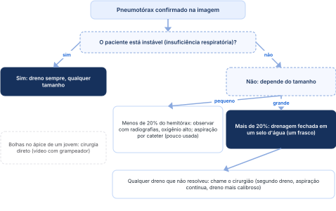
No slide 41: a ilustração mostra três frascos ligados à aspiração da parede; na aula, um frasco. O slide também traz o pneumotórax hipertensivo, com punção "salvadora" no 2º espaço intercostal anterior, e a recidiva do pneumotórax espontâneo, em que se considera a pleurodese.
Insistir no dreno que não funcionou. Segundo dreno, aspiração contínua no vácuo da parede, dreno mais calibroso, outra posição: tudo isso existe, mas é do cirurgião. O clínico, o emergencista ou o intensivista passa o primeiro dreno; se não resolveu, chama o cirurgião.
“Tentou uma vez, já fez o que tinha que ser feito, não deu certo, chama o cirurgião, porque pode dar zebra.”
No estágio da terapia intensiva, o Dr. André e os residentes fazem ultrassom em vários pacientes todos os dias: ventrículo direito na embolia pulmonar, deslizamento pleural, pneumotórax, atelectasia, consolidação. Vale chegar sabendo pelo menos o que se está procurando. "Cada vez mais vocês vão ter acesso ao ultrassom": é por isso que ele fez questão de ensinar o deslizamento pleural e o ponto P, mesmo sem slide.
Derrame da pneumonia: líquido turvo ou pus, Gram ou cultura com bactéria, ou pH abaixo de 7,2 = empiema: drenagem fechada em selo d'água. Pus ou pH abaixo de 7 é sempre empiema.
Tuberculose pleural: exsudato linfocítico com adenosina deaminase acima de 40 U/L. Neutrofílico não fecha.
Ultrassom do pneumotórax: ausência de deslizamento pleural mais ponto P.